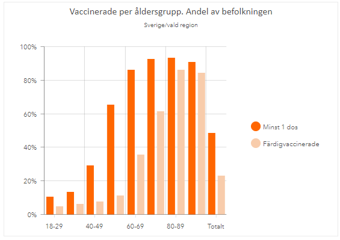
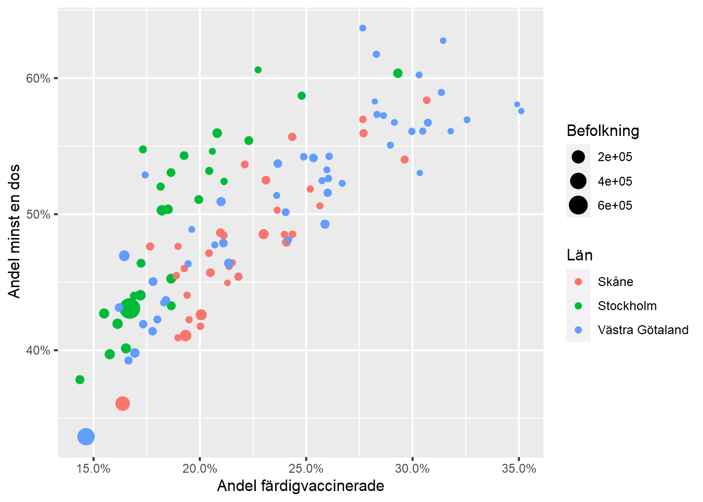

Laboration 2
Laborationen består av två uppgifter med ett antal delfrågor och kamratgranskning. Lösningen skall presenteras i form av en källkodsfil laboration2.Rmd skriven i R Markdown med output: github_document tillsammans med en kompilerad version laboration2.md och tillhörande bilder/figurer. Använd ett kodblock (“R chunk”) per delfråga och fyll på med så mycket beskrivande text mellan kodblocken så att det går att följa vad som görs. Att skriva lättläst kod är en konst, men en god början är att följa en konsekvent stil som i The tidyverse style guide. Ta dig lite tid att läsa igenom delar som verkar relevanta, att följa reglerna i 2.2 är en bra början.
Arbetet skall utföras individuellt och samarbete, speciellt kopiering/delning av kurskamraters kod, är inte tillåtet. Det är inte heller tillåtet att ställa direkta frågor relaterade till problemen på forum som t.ex. Stack Overflow. Samtidigt uppmuntras ni att söka efter inspiration till lösningar baserat på redan ställda frågor på dylika forum. Tänk dock på att alltid redovisa källan.
Underlaget till laborationen finns tillgängligt på https://github.com/MT3003-ST21 som lab2_xxx där xxx är ditt användarnamn på GitHub. Hämta detta som ett projekt i RStudio Cloud på samma sätt som Laboration 1.
Till laborationen hör två uppgifter markerade med Bonus. Dessa är frivilliga men genererar extra poäng. En bonuspoäng kommer denna gång även delas ut för den som i sin kod visar att hen tagit del av ovan nämnda stilguide.
Deadline för inlämning är midnatt 2021-07-04, precis som för Laboration 1 öppnar du en Issue “Laboration 2 redo för rättning!” när du är klar.
Fågelspaning i kungliga nationalstadsparken
På Artportalen kan du rapportera fynd eller observationer av djur, växter och svampar. Det är ett exempel på så kallad medborgarforskning, “citizen science”, där allmänheten, forskare och tjänstemän samarbetar med att bygga upp en databas som kan användas i forskning. Till denna laboration har vi hämtat alla fågelobservationer gjorda i kungliga nationalstadsparken, där du även hittar Stockholms universitets campus. Vi gör ett första försök till inläsning med:
library(tidyverse)
read_csv("data/artportalen.csv") %>%
glimpse()## Warning: One or more parsing issues, see `problems()` for details## Rows: 22,835
## Columns: 27
## $ Id <dbl> 89857263, 89857331, 89857255, 89857254, 8985725~
## $ Taxonsorteringsordning <dbl> 55004, 54858, 54666, 54660, 54903, 55086, 53677~
## $ Rödlistade <chr> NA, NA, NA, NA, NA, NA, NA, NA, NA, NA, NA, "VU~
## $ Artnamn <chr> "Gråsparv", "Gärdsmyg", "Talgoxe", "Blåmes", "K~
## $ `Vetenskapligt namn` <chr> "Passer domesticus", "Troglodytes troglodytes",~
## $ Auktor <chr> "(Linnaeus, 1758)", "(Linnaeus, 1758)", "Linnae~
## $ Antal <chr> "1", "1", "1", "1", "3", "1", "10", "1", "1", "~
## $ `Ålder/stadium` <chr> NA, NA, NA, NA, NA, NA, NA, NA, NA, NA, NA, NA,~
## $ Kön <chr> NA, NA, NA, NA, NA, NA, NA, "hane", NA, NA, NA,~
## $ Aktivitet <chr> NA, "spel/sång", NA, NA, NA, "lockläte, övriga ~
## $ Lokalnamn <chr> "Bergshamra Centrum", "Björnstigen 129,Bergsham~
## $ Ostkoordinat <dbl> 1626820, 1626890, 1626890, 1626890, 1626890, 16~
## $ Nordkoordinat <dbl> 6586660, 6586736, 6586736, 6586736, 6586736, 65~
## $ Noggrannhet <dbl> 137, 25, 25, 25, 25, 304, 1344, 1344, 1344, 134~
## $ Diffusion <dbl> 0, 0, 0, 0, 0, 0, 0, 0, 0, 0, 0, 0, 0, 0, 0, 0,~
## $ Län <chr> "Stockholm", "Stockholm", "Stockholm", "Stockho~
## $ Kommun <chr> "Solna", "Solna", "Solna", "Solna", "Solna", "S~
## $ Provins <chr> "Uppland", "Uppland", "Uppland", "Uppland", "Up~
## $ Församling <chr> "Solna", "Solna", "Solna", "Solna", "Solna", "S~
## $ Startdatum <date> 2021-01-01, 2021-01-01, 2021-01-01, 2021-01-01~
## $ Starttid <time> NA, NA, NA, NA, ~
## $ Slutdatum <date> 2021-01-01, 2021-01-01, 2021-01-01, 2021-01-01~
## $ Sluttid <time> NA, NA, NA, NA, ~
## $ Kommentar <chr> NA, NA, NA, NA, NA, NA, NA, NA, NA, NA, NA, NA,~
## $ Biotop <lgl> NA, NA, NA, NA, NA, NA, NA, NA, NA, NA, NA, NA,~
## $ Rapportör <chr> "Björn Lindkvist", "Björn Lindkvist", "Björn Li~
## $ Observatörer <chr> "Björn Lindkvist", "Björn Lindkvist", "Björn Li~Några observartioner:
- Vi får ett varningsmeddelande om “parsing failure” i kolumnen Biotop.
- Kolumnen
Antalhar blivit läst som text (chr) trots att den förefaller vara numerisk. - En del kolumnnamn är opraktiska då de innehåller mellanslag och/eller speciella tecken. Även svenska åäö bör undvikas i namn på funktioner och variabler då de kan orsaka problem på datorer med andra nationella inställningar.
- Flera variabler innehåller saknade värden markerade med
NA.
Kolumnernas format (numerisk, text, datum, …) gissas av funktionen read_csv baserat på de första 1000 värdena. Om samtliga dessa saknas (är NA) antas kolumnen vara logisk (TRUE/FALSE) och konverteras till detta format. I fallet Biotop finns dock ett ensamt värde “Våtmark” på rad 2101 och det är därför vi får en varning. Vid konvertering till logiskt variabelformat går detta värde förlorat (ändras till NA). För att undvika detta kan vi ange argumentet guess_max = 50000, vilket instruerar read_csv att basera gissningen på de första 50000 raderna. På så sätt tar det något längre tid att läsa in filen, men Biotop blir korrekt klassad som text. När det gäller kolumnen Antal visar det sig att den innehåller en del rader med “noterad” eller “Ej återfunnen” och därför blivit klassad som text, vi kommer inte anväda denna kolumn och låter den därför vara. För att städa upp kolumnnamnen kan vi använda funktionen clean_names i paketet janitor. Vi läser nu åter in data med
data_artportal <- read_csv("data/artportalen.csv", guess_max = 50000) %>%
janitor::clean_names()
glimpse(data_artportal)## Rows: 22,835
## Columns: 27
## $ id <dbl> 89857263, 89857331, 89857255, 89857254, 8985725~
## $ taxonsorteringsordning <dbl> 55004, 54858, 54666, 54660, 54903, 55086, 53677~
## $ rodlistade <chr> NA, NA, NA, NA, NA, NA, NA, NA, NA, NA, NA, "VU~
## $ artnamn <chr> "Gråsparv", "Gärdsmyg", "Talgoxe", "Blåmes", "K~
## $ vetenskapligt_namn <chr> "Passer domesticus", "Troglodytes troglodytes",~
## $ auktor <chr> "(Linnaeus, 1758)", "(Linnaeus, 1758)", "Linnae~
## $ antal <chr> "1", "1", "1", "1", "3", "1", "10", "1", "1", "~
## $ alder_stadium <chr> NA, NA, NA, NA, NA, NA, NA, NA, NA, NA, NA, NA,~
## $ kon <chr> NA, NA, NA, NA, NA, NA, NA, "hane", NA, NA, NA,~
## $ aktivitet <chr> NA, "spel/sång", NA, NA, NA, "lockläte, övriga ~
## $ lokalnamn <chr> "Bergshamra Centrum", "Björnstigen 129,Bergsham~
## $ ostkoordinat <dbl> 1626820, 1626890, 1626890, 1626890, 1626890, 16~
## $ nordkoordinat <dbl> 6586660, 6586736, 6586736, 6586736, 6586736, 65~
## $ noggrannhet <dbl> 137, 25, 25, 25, 25, 304, 1344, 1344, 1344, 134~
## $ diffusion <dbl> 0, 0, 0, 0, 0, 0, 0, 0, 0, 0, 0, 0, 0, 0, 0, 0,~
## $ lan <chr> "Stockholm", "Stockholm", "Stockholm", "Stockho~
## $ kommun <chr> "Solna", "Solna", "Solna", "Solna", "Solna", "S~
## $ provins <chr> "Uppland", "Uppland", "Uppland", "Uppland", "Up~
## $ forsamling <chr> "Solna", "Solna", "Solna", "Solna", "Solna", "S~
## $ startdatum <date> 2021-01-01, 2021-01-01, 2021-01-01, 2021-01-01~
## $ starttid <time> NA, NA, NA, NA, ~
## $ slutdatum <date> 2021-01-01, 2021-01-01, 2021-01-01, 2021-01-01~
## $ sluttid <time> NA, NA, NA, NA, ~
## $ kommentar <chr> NA, NA, NA, NA, NA, NA, NA, NA, NA, NA, NA, NA,~
## $ biotop <chr> NA, NA, NA, NA, NA, NA, NA, NA, NA, NA, NA, NA,~
## $ rapportor <chr> "Björn Lindkvist", "Björn Lindkvist", "Björn Li~
## $ observatorer <chr> "Björn Lindkvist", "Björn Lindkvist", "Björn Li~och är nu nöjda.
Uppgifter
- Skapa en tabell över 10 mest rapporterade arterna (efter
artnamn) och antalet gånger de blivit rapporterade. Funktionerna islice-familjen kan hjälpa till att begränsa listan (se?slice). En enkel tabell i R Markdown kan formateras medknitr::kable. - Skapa en tabell över de 10 rapportörer (
rapportor) som registrerat flest olika fågelarter (funktionenn_distinctkan vara användbar). Eftersom det inte finns något unikt rapportör-id får du anta att namnen är unika. - Välj ut de 12 mest rapporterade arterna och illustrera antalet observationer per art och kalendervecka med stapeldiagram. Du kan få veckonummer med
lubridate::isoweek(startdatum)och skall användafacet_wrapför att dela upp efter art. Ett potentiellt problem är att första dagarna i januari tillhör vecka 53, här kan du t.ex. användaforcats::fct_relevelför att placera motsvarande stapel först. Se exempel i?forcats::fct_relevel. Vilka arter verkar vara flyttfåglar? Du kan kontrollera på naturhistoriska riksmuseets lista över våra vanligaste flyttfåglar. - Bonus: I ovanstående uppgift illustrerar du istället den veckovisa andelen av alla observationer som tillhör den valda arten.
- Bonus: I kolumnen
aktivitetstår ibland noterat under vilka omständigheter fågeln observerats. Skapa en ny variabel som antar värdet"Parning"om textsträngenaktivitetinnehåller ordet"parning", värdet"Ungar"om den innehåller ordet"ungar"och annarsNA. Illustrera sedanstartdatumför parning och ungar medgeom_densityfärglagt (color) efter den nya variabeln (filtrera bort de som fått värdeNA). Variabeln skapar du t.ex. medcase_wheni kombination medstr_detect. - Sädesärlan är ett populärt vårtecken. I
data/artportalen_arla.csvhar vi valt ut alla observationer av Sädesärlor i nationalstadsparken sedan år 2000, filen är för övrigt i samma format somdata/artportalen.csv. Illustrera hur första observationsdag varierat med åren med ett punktdiagram och en anpassad rät linje (geom_smoothmed argumentetmethod = "lm"ger en sådan). Dag på året fås medlubridate::yday(startdatum). Att flyttfåglars ankomst tidigareläggs ses ibland som en effekt av global uppvärmning, kan du tänka dig en alternativ förklaring i detta fall?

Sädesärla. Bildkälla: Andreas Trepte, Wikimedia Commons
Massvaccinering
Excelarket data/Folkhalsomyndigheten_Covid19_Vaccine.xlsx innehåller statistik över covid-19 vaccinerade från 10/6 hämtad från folkhälsomyndighetens statistiksida. Tabeller finns sparade i olika flikar, du kan lista flikarna med
readxl::excel_sheets("data/Folkhalsomyndigheten_Covid19_Vaccine.xlsx")## [1] "Vaccinationer tidsserie" "Vaccinerade tidsserie"
## [3] "Vaccinerade ålder" "Vaccinerade kön"
## [5] "Vaccinerade kommun" "Vaccinerade kommun och ålder"
## [7] "FOHM 10 JUN 2021"Uppgifter
- Nedanstående figur kommer från sidan med FHMs interaktiva grafik och visar andel vaccinerade i hela landet uppdelat efter åldersgrupp. Gör motsvarande figur för valfri region, du behöver inte efterlikna färgsättning och andra grafiska element. Data hittar du i fliken
Vaccinerade åldersom läses in med
vacc_alder <- readxl::read_excel("data/Folkhalsomyndigheten_Covid19_Vaccine.xlsx",
sheet = "Vaccinerade ålder")Tips: För att få y-axeln uttryckt i procent kan du lägga till + scale_y_continuous(labels = scales::percent) till ditt ggplot-anrop. 
Nedanstående figur illustrerar hur vaccinationsframgången varierar mellan kommuner i Skåne, Stockholms och Västra Götalands län baserat på data i fliken
Vaccinerade kommun och ålder(flikenVaccinerade kommuninnehåller inte all nödvändig information). Gör motsvarande figur. Bonus: Gör en figur som illustrerar antalet vaccinationer utförda per vecka och region under 2021, t.ex. genom att dela upp regionerna med
facet_wrap. Data hittar du i flikenVaccinationer tidsserie. Notera att kolumnenAntal vaccinationervisar det kumulativa antalet och inte antalet vaccinationer den aktuella veckan. Prova lägga till argumentetscales = "free_y"tillfacet_wrap.
Kamratgranskning
När du fått tillgång till en kamrats inlämning:
- Hämta den som ett nytt projekt till RStudio Cloud.
- Öppna
laboration2.Rmdoch kontrollera att den kompilerar (Knit) utan problem. - Läs igenom laborationen och reflektera över skillnader/likheter med dina egna lösningar.
- I ett svar till kamratens issue, rapportera “Provkört utan problem!” om så är fallet, annars rapporterar du eventuella problem. Ge även feedback baserat på dina reflektioner ovan, håll god ton.